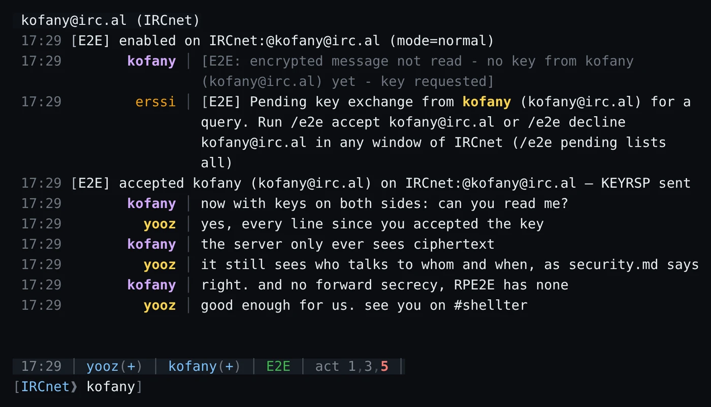
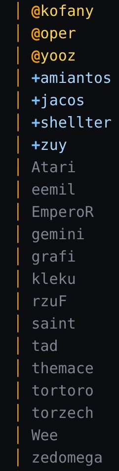
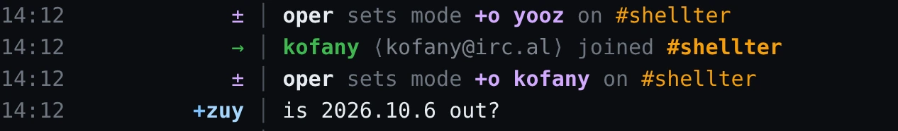
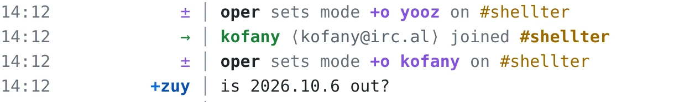
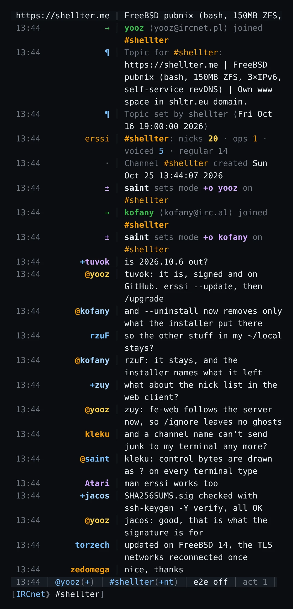

erssi 2026.10.6 na #shellter, z prawdziwymi nickami z kanału. Ich wypowiedzi napisano na potrzeby tego obrazka.
To, co użytkownik IRCnetu dopisywałby skryptami
Wszystko, co daje erssi, zostaje: panele boczne, obsługa myszy, 24-bitowe kolory, podgląd obrazków, frontend webowy i skrypty Perla z irssi. Ta edycja dodaje resztę, a każde polecenie ma swoją stronę w /help.
Szyfrowanie end-to-end, wbudowane
RPE2E wbudowane i zgodne protokołem z repartee oraz jego skryptami dla WeeChata i irssi: XChaCha20-Poly1305 z osobnym kluczem dla każdego nadawcy, dawanymi tylko osobom, które zaakceptujesz. Wiadomość, której nie da się odczytać, nigdy nie znika. Chroni to, co piszesz, nie to, kto z kim rozmawia, i nie ma forward secrecy.

Prawdziwa wymiana: pierwsza wiadomość prosi o klucz, jedno /e2e accept, potem wszystko jest czytelne.
Panele boczne na swoim miejscu
Twoje okna po lewej, nicki kanału według rangi po prawej. Zapisane układy wracają po restarcie dokładnie takie, jakie były.

Nick zostaje przy Tobie
/keepnick odbiera go w chwili, gdy się zwolni: przez MONITOR, jeśli serwer go oferuje, w przeciwnym razie przez ISON.
Wzmianki w jednym miejscu
Prywatne wiadomości, notice od ludzi i podświetlenia w jednym oknie i w logu, z powiadomieniem na pulpicie przez terminal, także w tmuksie.
Jedna kolumna dla każdej linii
Motyw shellter ustawia wiadomości, zdarzenia i odpowiedzi pod jednym separatorem, w kolorach shellter.me; shellter-light dla jasnych terminali.
shellter

shellter-light

Przeszukuj logi
/search szuka w logach kanału albo wszystkich sieci w osobnym procesie, więc erssi działa dalej.
erssi działa w tmuksie na Twoim koncie shellowym. Do tej samej sesji dostaniesz się z wąskiego okna ssh albo z przeglądarki.
Czytelne w wąskim terminalu. Długie linie się zawijają i zostają pod separatorem, nawet przy 56 kolumnach.
Klient webowy, gdy jest potrzebny. fe-web udostępnia sesję klientowi takiemu jak NexusIRC; lista nicków w przeglądarce zgadza się z serwerem.
Tylko Ty możesz się do niego dostać. Na współdzielonym serwerze fe-web słucha na gnieździe uniksowym, do którego dostęp ma tylko Twoje konto.

Instalacja jedną linią, aktualizacja dwiema
Uruchom to na swoim koncie shellowym. erssi trafia do ~/.local/opt/erssi, a ustawienia trzyma w ~/.erssi, więc działa obok irssi.
1. Uruchom instalator
Sprawdza system, podpis wydania i paczkę, zanim cokolwiek w Twoim katalogu domowym się zmieni.
curl -fsSL https://raw.githubusercontent.com/y-o-o-z/erssi/main/shellter-install.sh | sh
2. Uruchamiaj w tmuksie
Sesja przetrwa wylogowanie. Przy pierwszym starcie erssi pyta o sieć, nick i motyw, a potem się łączy.
tmux new -s irc erssi
3. Aktualizuj, gdy wyjdzie wydanie
Potem /upgrade w działającym erssi zachowuje okna; połączenia TLS zostaną raz nawiązane od nowa.
erssi --check-update
erssi --update
Debian 13, FreeBSD 14 i 15, amd64
Gotowa binarka w kilka sekund, instalowana tylko wtedy, gdy podpis SHA256SUMS, suma kontrolna i manifest się zgadzają. Poprzednie wydanie zostaje dla --rollback.
Inne systemy Linux i FreeBSD
Budowa z najnowszego podpisanego wydania, z testami, w około dwie minuty. Potrzebny GLib 2.70 lub nowszy; brakujące pakiety instalator wymienia dla administratora.
Uruchom to w klonie repozytorium; gpg jest wyłączony, żeby liczył się tylko klucz SSH. Musi zgłosić poprawny podpis z odciskiem podanym obok. Porównaj go z takim, który masz z innego źródła, na przykład pytając na #shellter.
Części, które rozmawiają z siecią, są przeglądane, fuzzowane i testowane pod sanitizerami. Co jest chronione, a co nie (po angielsku).
6 z 6: build, shellcheck, installer, e2e-live, sanitizers, fuzz
Nowości w 2026.10.6
Wydane 25 października 2026: poprawki po pełnym przeglądzie wersji 2026.10.5.
terminal
Nic nie trafia do terminala na surowo. Znaki sterujące z sieci są rysowane jako ? na każdym typie terminala, więc nazwa kanału nie zmieni Ci schowka ani tytułu okna.
instalacja
--uninstall usuwa tylko swoje pliki. Biblioteki i strony man innych programów w tym samym katalogu zostają, a instalator wymienia, co zostawił.
fe-web
Frontend webowy, który wytrzymuje obciążenie. Zbyt wiele nowych połączeń z jednego adresu jest zamykanych, zanim zacznie się TLS; nowe certyfikaty dostają losowy numer seryjny, rozszerzenia, których oczekują przeglądarki, i 825 dni ważności.
e2e
Stabilniejsze szyfrowanie. Prośby o klucz mają limit na nadawcę, keyring jest trzymany w pamięci, a zwolniony tekst jawny jest czyszczony.
rdzeń
Bezpieczniejsze /upgrade. Najpierw sprawdza, czy da się zapisać plik sesji, a nieudane /upgrade niczego nie wysyła dwa razy.
dokumentacja
man erssi. Własna strona podręcznika, podlinkowana także przy instalacji w katalogu domowym.
![erssi 2026.10.6 na #shellter w IRCnecie. Po lewej lista okien: Notices, IRCnet, #shellter, Mentions. Pośrodku yooz (yooz@ircnet.pl) i kofany (kofany@irc.al) wchodzą na kanał i dostają opa od oper, potem ludzie na kanale rozmawiają po angielsku o wydaniu: zuy pyta, czy 2026.10.6 już jest, yooz odpowiada, że jest podpisane i na GitHubie, kofany mówi, że --uninstall usuwa teraz tylko to, co zainstalował instalator, saint, że bajty sterujące są rysowane jako znak zapytania, jacos, że SHA256SUMS.sig się zgadza. Po prawej lista nicków według rangi: opy kofany, oper, yooz; voice amiantos, jacos, shellter, zuy; potem reszta.](../images/shellter-dark-1400.png)